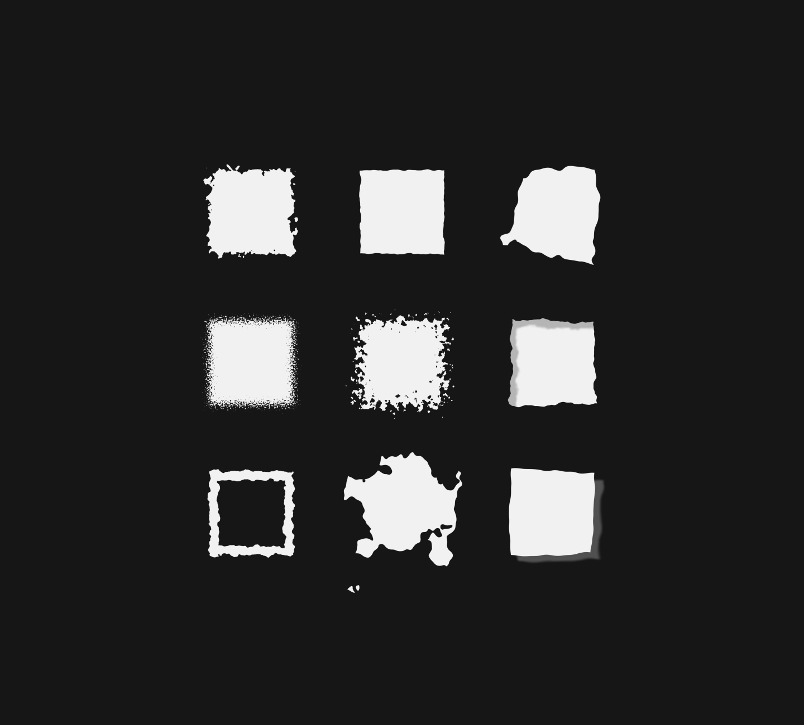
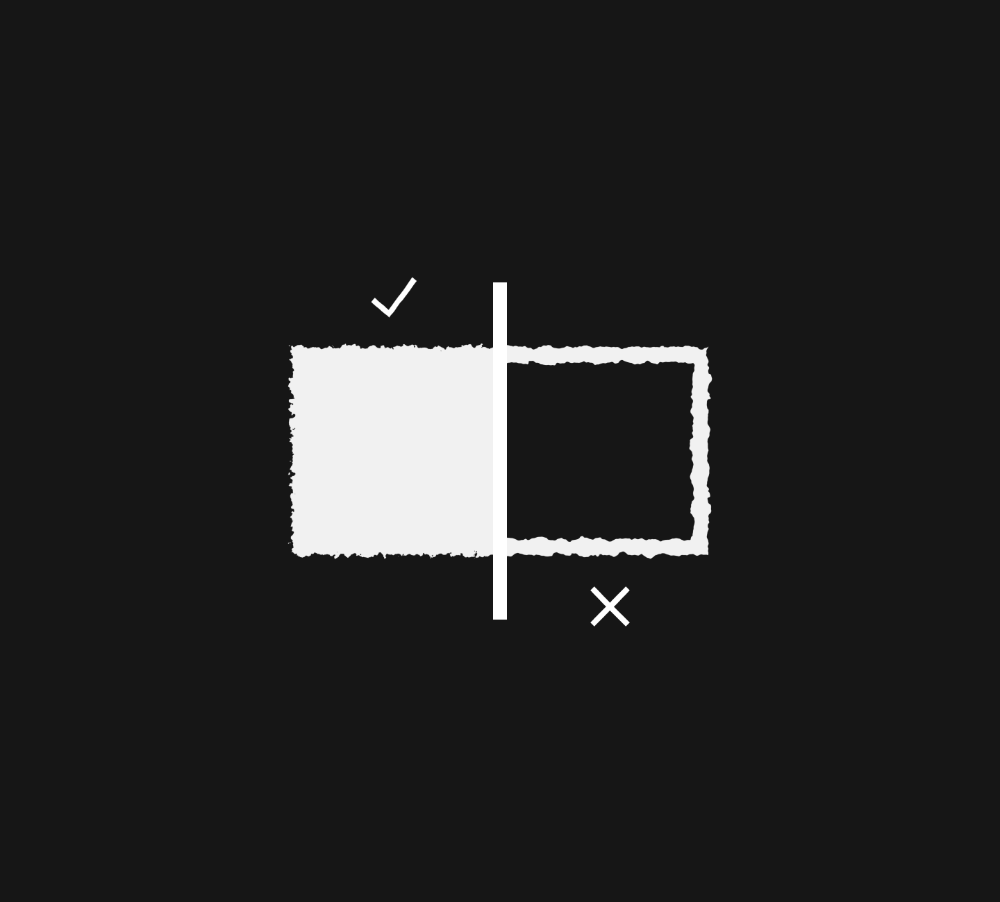
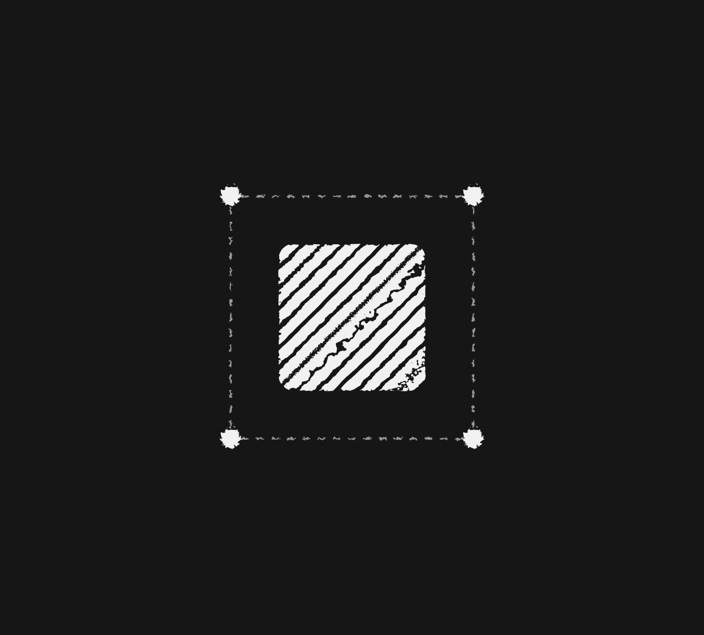
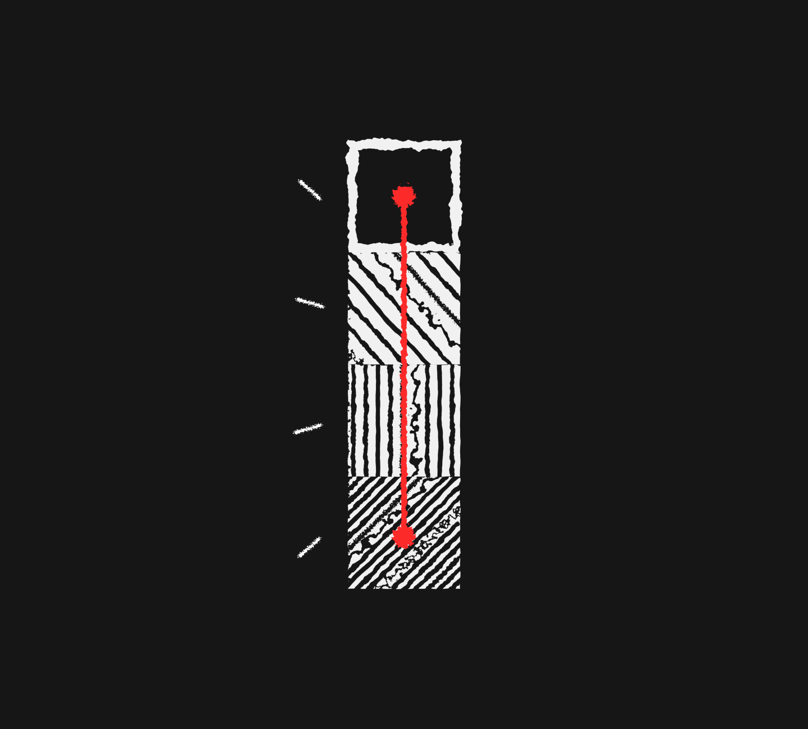
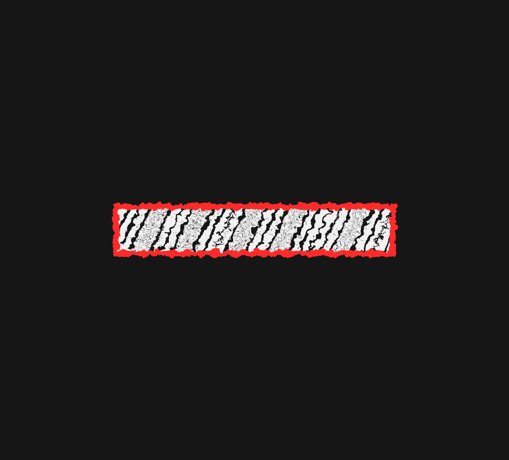

SUBTRACTION {-}
ACCUMULATION
Less is More.
Less is More.
Less is More.
Less is More.
How many times have we heard this ? And not just in the context of design or architecture, but as a way of life ?
I would like to clear it right away that the statement is not a call for stringent minimalism, but rather a call for clarity and focus. It is demanding for precision, NOT blatant removal of objects.
We currently live in a world that cares more about being a mile wide and an inch deep, rather than the other way around. This creates a system where there is no room left for personality or long-term sustainability. We lack focus, clarity and the ability to spend time with ONE thing and to refine it to the highest standard possible.
You can blame this on several factors:
- Our terrible attention span, constantly destroyed by social media and easy hits of dopamine.
- Our newfound reliance on AI, where learning and personal growth has lost importance...we delegate everything to AI, and as a result have developed a false sense of confidence. You will never understand the intricacies of a craft unless, you, yourself, spend time dedicated to mastering it.
- Our world has become obsessed with quantity over quality - we care about making and doing more, even if it is subpar, rather than doing less with more value.
This soulless accumulation lacks stability. You try to do too many things, you will find out just how hollow this pursuit is. It creates a questionable identity because you never properly defined the outcome you wish to achieve.
Systems, built on shaky foundations...
So... everything crumbles.
That extensive feature list for a product ? Is all of that really necessary, or would you rather focus on a few distinctive features and make them so strong that it becomes a differentiating factor in the market ?
It also must be emphasized that without a strong foundational planning, any new unplanned feature will lead to the complete collapse of the system.
GROUNDWORK
When planning for the end-to-end development of a system, it is important to visualize the various possibilities and needs that may arise. Potential changes and feedback should be anticipated beforehand and there should be space allocated for deviation from a pre-fixed roadmap.
Assume and plan for all the directions a product can take. Think about all the conditions under which a system can fail. List all the non-negotiable requirements and all the optional ones.
Now stare at those non-negotiables, let them occupy your mind for a few days. How many of them are REALLY NEEDED for the system and how many are optional additions sitting in disguise.
Get a second, third or fourth opinion. Discuss, take your time (not long enough to avoid decision-making), reduce as much as you can while maintaining the vision and integrity of the system, then finalize a proper roadmap and feature list.
Now stick to it. Hopefully instead of anything and everything, you made strategic inclusions and asked WHY before making them.
FOCUS
One thing done better (or rather best), is a million times more valuable than a hundred things done with mediocrity.
Pick something and refine it, give it depth, detail and substance, study it endlessly, make it robust and impenetrable, share it with others and implement constructive feedback, make meaningful changes to it based on the same.
The core idea of subtraction is to question each and every addition. What purpose does a new layer add to the overall product and vision ? Does it make the product better ? Does it solve a problem ?
Consider that you are designing a notes app. It will obviously have a blank canvas for your ideas where you can dump your thoughts and reflections. That is the starting point. Before adding anything else, whether that is checkboxes for to-dos or mind-mapping diagrams or some fancy AI integration, first make the core canvas better. Elevate the experience of note-taking on a root, atomic level. How can you arrange simple notes meaningfully ?. How can you, in its current state, make it better ?. Ask those type of questions, before moving on to adding another feature, then repeat the same for that new layer.
The philosophy of subtraction can also extend into other areas of your life.
I, as a designer, have noticed how restless other designers have become when it comes to tools. They bounce between different tools, thinking it makes them better, more productive, or it adds more to their skillset. This can only be possible and effective if they mastered one tool before moving on to the next and then again if that mastery allows you to get the work done, and done well in appropriate time with detail and precision, perhaps it is worth questioning the move to another tool in the first place.
Experimentation shouldn’t happen without a properly defined desired outcome. Don’t throw darts in the dark and hope that it lands a bullseye.
Please note that when I mention ‘tool’ I refer to software and programs with actual learning curves. I don’t consider generative AI as a ‘tool’, using that invokes a question of ethics, which I will talk about in a separate essay.
SCALE
As a product grows and gains users, it quickly attracts different demands. But there is a difference between WANTS and NEEDS. If you cater to every ‘want’ you will have an unstable product, rather identify the correct ‘needs’ and you can build something that doesn’t compromise on fundamentals.
The foundational layer → Make it the best → Move on the next NEED → Make it the best → Move on to the next NEED → Keep the cycle going until no further ‘needs’ exist → Move on to building a different product.
A ‘want’ is optional, a ‘need’ is mandatory. This circles back to the groundwork, make sure you identify what is what before you proceed.
Under normal conditions a system SHOULD end somewhere, a final NEED should be supplied to close the chain, but this rarely happens as companies tend to add unnecessary things to the system, making it unstable, rather than refine existing concepts.
Subtraction isn’t about delivering a barebones experience. It is about providing a meaningful one, rooted in substance, focus and depth. When your focus is on subtraction, you add with restraint, at that point every addition isn’t actually a new feature, but rather a refinement or the next logical step for where the system NEEDS to be.
If you do all this properly it will result in a well structured, homogenous system where every NEED compliments every other NEED, and as a result, every inclusion fits perfectly.
THE END
CREDITS
TIMELINE
CONTACT
FINAL NOTES
Thank you so much for reading this essay, I am aiming to deliver a new one every month (if time permits). I am also open to new projects so feel free to connect using the mail above if you have something exciting for me.
- Rahil H. Static
LEGAL
THIS WORK IS COPYRIGHTED AND THE PROPERTY OF RAHIL H. STATIC, ANY REPRODUCTION, MODIFICATION OR DISTRIBUTION OF MATERIAL WITHOUT PERMISSION IS STRICTLY PROHIBITED.
[C] 2026 RAHIL H. STATIC | ALL RIGHTS RESERVED